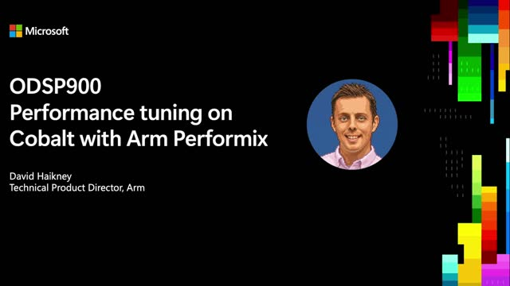
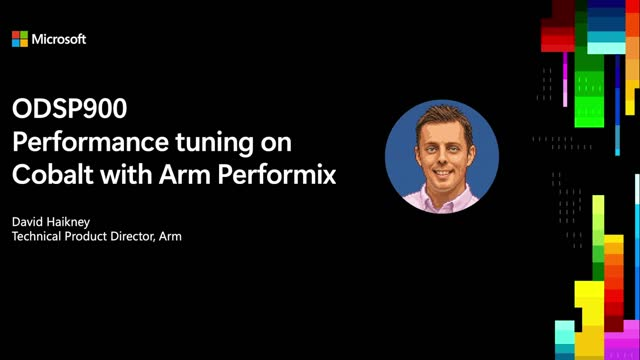
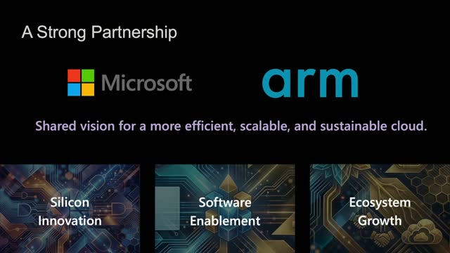
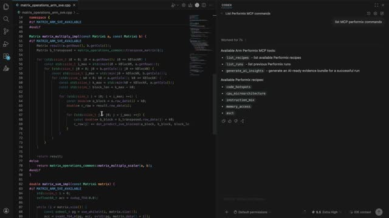
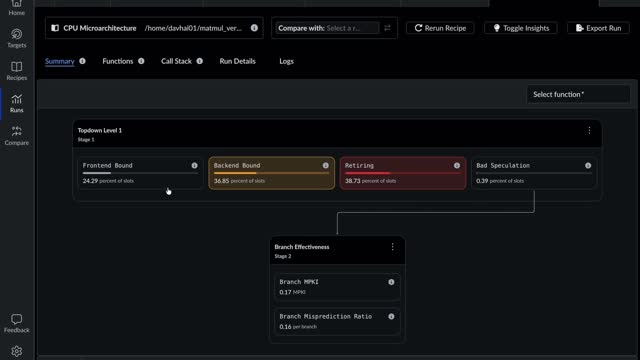
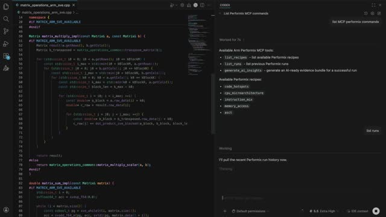
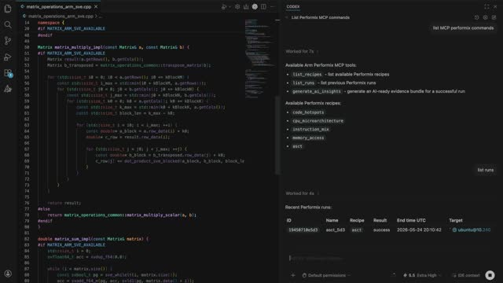
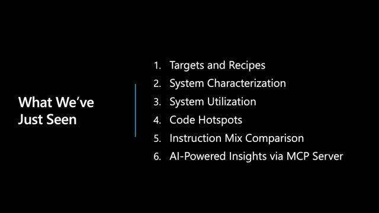
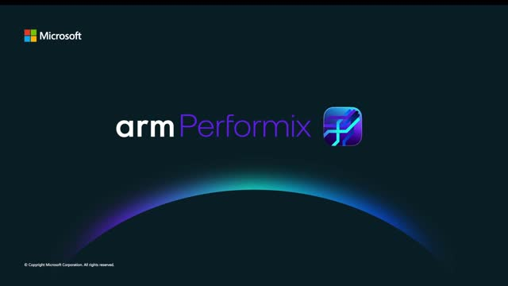

Performance tuning on Cobalt with Arm Performix
Official description
Learn how to identify code hotspots, interpret performance data, and move from raw metrics to concrete improvements. The session also explores advanced command-line usage and shows how Arm Performix can be integrated into automated and agentic workflows for continuous performance analysis. By the end of the session, you’ll be able to apply Performix in real-world development pipelines to continuously monitor, diagnose, and optimize application performance.
Summary
Overview
A technical walkthrough of Arm Performix, a new performance analysis toolkit developed with Microsoft to observe and accelerate workloads running on Azure Cobalt. The session frames performance analysis as an investigative, evidence-driven process and demonstrates how Performix moves engineers from raw metrics to confidence-based, actionable optimizations through guided recipes and LLM integration.
Key announcements
- Arm Performix toolkit launch ([00:00:10

m05sm10s
p05s
p10s]) — A new performance analysis toolkit, built in collaboration with Microsoft performance experts, to observe and accelerate workloads on Cobalt. - MCP server integration ([00:06:16

m05s
m10s
p05s
p10s]) — Performix provides an MCP server that couples profiling data, disassembly, target system details, and source code with an LLM to suggest confidence-based improvements. - General availability ([00:07:28m05s

m10s
p05sp10s]) — Performix is available now, free to download and free to use.
{kind=link}
{kind=link}
{kind=link}
{kind=link}
{kind=link}
{kind=link}
{kind=link}
{kind=link}
{kind=link}
{kind=link}
{kind=link}
{kind=link}
Topics covered
- Performance analysis as an iterative investigation: hypotheses, evidence-gathering, and revisiting assumptions rather than a linear process.
- Good experimental science: changing one variable at a time, repeating runs for consistency, and comparing against baselines.
- Core Performix concepts: targets (Cobalt instances accessed via SSH credentials) and recipes (experiments/workflows).
- System characterization recipe running microbenchmarks, including memory bandwidth versus access size to assess cache performance.
- System utilization recipe with a CPU heat map across a 96-core system showing core occupancy over a one-second interval.
- Code hotspots recipe for sampling time spent in code across all languages, including Java and .NET, tied back to source.
- Instruction mix analysis comparing matrix multiplications using Arm NEON versus SVE instructions.
- CPU microarchitecture recipe using Arm's top-down methodology to examine cache layers, pipeline stalls, and branch mispredictions.
- Breadth-first analysis followed by deep dives, plus command-line usage for terminal-based workflows.
Notable quotes
"Performance analysis can be thought of like a crime investigation. You have suspects, leads, hypotheses." — David Haikney
"Understanding which parts of our code are hot ensures we can spend time optimizing the right places, something that can't be done with static analysis tools." — David Haikney
"Powerful MCP server integration means performance analysis goes from being a passive activity of sampling and profiling to a dynamic one of actively suggesting improvements." — David Haikney
Products and tools mentioned
- Arm Performix
- Azure Cobalt
- Model Context Protocol (MCP) server
- Visual Studio
- Arm NEON
- Arm SVE
- Java
- .NET
Speakers featured
- David Haikney — Technical Product Director, Arm
Transcript
Show / hide transcript (9,078 chars)
[00:00:00] DAVID HAIKNEY: Hello, everybody, [00:00:01] and welcome to this online video for Microsoft Build. [00:00:04] I'm David Haikney, Technical Product Director at Arm. [00:00:08] In this short video, I'll walk you through how [00:00:10] to use our new performance analysis toolkit, Arm Performix, [00:00:14] to help you observe [00:00:15] and accelerate the workloads running on Cobalt. [00:00:20] Microsoft and Arm have an incredibly strong partnership, [00:00:23] and Performix has been developed in close collaboration [00:00:26] with Microsoft performance experts. [00:00:29] I know many of you may be migrating to Cobalt [00:00:31] for the first time, and so I wanted [00:00:33] to briefly draw your attention to some [00:00:35] of the fabulous resources to help you on your journey. [00:00:42] Before jumping into the demo, I want to take a moment [00:00:44] to set the scene on performance analysis. [00:00:48] Performance analysis can be thought [00:00:49] of like a crime investigation. [00:00:51] You have suspects, leads, hypotheses. [00:00:54] You need to gather evidence to help support [00:00:55] or disprove your theories. [00:00:57] There may be blind alleys and dead ends. [00:00:59] New evidence may require you to revisit previous assumptions. [00:01:03] It is not a straightforward, linear process. [00:01:06] Performance engineers need to wrangle a very wide, complex, [00:01:10] and fragmented toolset. [00:01:12] That is why we built Arm Performix. [00:01:15] Whilst each investigation is unique, the overall approach [00:01:19] that expert performance analysts take tends to be consistent. [00:01:23] Investigations tend to start very broad [00:01:26] and acquire an overall picture before diving deeper [00:01:29] into the details. [00:01:30] Experiments are run with good science, changing one variable [00:01:34] at a time, repeating the runs to understand consistency, [00:01:38] and comparing results against previous baselines. [00:01:41] Specifically, this means starting with an understanding [00:01:45] of what the platform, in our case, [00:01:47] the Cobalt instance, is capable of. [00:01:50] Then, understanding how this system behaves [00:01:53] when the workload is applied. [00:01:56] This will help dictate where analysis is best focused. [00:02:00] We'll show you some examples [00:02:01] of where we can go deeper with the analysis. [00:02:04] So let's jump into the demo. [00:02:07] This is the Performix UI. [00:02:09] Everything we'll demo here is also available via the command [00:02:12] line for those that prefer to do the analysis from the terminal. [00:02:16] To get started, I'll introduce you [00:02:18] to two key concepts, recipes and targets. [00:02:23] Targets are the systems, again, in our case, [00:02:25] the Cobalt instances, that we're going to run our workload on. [00:02:30] Adding a target is a simple case [00:02:32] of supplying the relevant SSH credentials, host, user, port, [00:02:37] and any required SSH keys. [00:02:41] The next concept is recipes. [00:02:43] These are the experiments or workflows we want to run [00:02:47] on our target as part of our performance analysis. [00:02:51] There are a number of recipes here. [00:02:53] Those that are still under development are marked [00:02:55] as experimental as we continue to expand this toolkit. [00:02:59] We'll start by assessing our overall Cobalt target instance. [00:03:04] We do this by running the system characterization recipe. [00:03:08] This is going to run a series of microbenchmarks on the platform. [00:03:12] Running a recipe, we select the target, [00:03:14] choose the benchmarks we want to run. [00:03:16] Performix makes sure the target is set up [00:03:19] and any dependencies are installed [00:03:21] on the target system on your behalf. [00:03:24] Here's an example of one of the system characterization outputs, [00:03:28] how memory bandwidth varies with access size, or in other words, [00:03:32] how the cache is performing. [00:03:34] This recipe is useful [00:03:35] to validate the instance itself is performing [00:03:38] at the expected level. [00:03:40] The next step is to see how it behaves [00:03:42] when the workload is running. [00:03:45] We can do this with the system utilization recipe. [00:03:49] With this recipe, we can choose to launch a new workload, [00:03:52] attach to an already running process, [00:03:55] or profile across all processes. [00:03:57] In this example, I focus on the CPU of our 96-core system. [00:04:03] This is a heat map of how busy each core is [00:04:06] over a one-second interval. [00:04:09] We can see that roughly two-thirds [00:04:11] of the cores are occupied [00:04:13] and the remaining third relatively idle. [00:04:16] This at-a-glance visualization generates lots [00:04:19] of potential avenues for our investigations. [00:04:22] Perhaps we can increase the thread count, [00:04:24] maybe a different instance size, [00:04:26] or perhaps there's some lock contention that's occupying [00:04:28] these cores. [00:04:30] Let's dig deeper into what those cores are actually running. [00:04:34] We can go deeper using the code hotspots recipe. [00:04:37] This samples where time is being spent in the code, [00:04:40] and we can tie this back to the source code itself. [00:04:43] This recipe works across all languages, [00:04:45] including Java and.NET. [00:04:48] Understanding which parts [00:04:49] of our code are hot ensures we can spend time optimizing the [00:04:54] right places, something that can't be done [00:04:56] with static analysis tools. [00:04:59] Another way we can dig [00:05:00] into where time is being spent is using instruction mix. [00:05:04] This is useful for understanding how well the application is [00:05:08] taking advantage of the platform's capabilities. [00:05:11] I mentioned earlier how it's often useful [00:05:13] to compare the results of one experiment with another. [00:05:17] Performix allows you to easily compare between runs. [00:05:22] This example shows the different instruction mixes [00:05:24] between two different matrix multiplications, [00:05:27] one using Arm NEON instructions, the other using SVE. [00:05:33] And we can go deeper still using the CPU [00:05:35] microarchitecture recipe. [00:05:38] This uses Arm's top-down methodology to characterize [00:05:42] where time is being spent [00:05:44] at various different parts of the CPU. [00:05:47] We can dig into how the various layers of caching are performing [00:05:50] as well as detecting pipeline stalls due [00:05:52] to branch mispredictions. [00:05:55] As you can see, Performix has the ability to do [00:05:58] that breadth-first analysis across the entire system, [00:06:02] and then go deep into specific aspects [00:06:05] as the investigation unfolds. [00:06:08] For the final part of the demonstration, [00:06:10] we're going to look at delivering insights [00:06:12] and actual improvements from this analysis. [00:06:16] Performix provides an MCP server [00:06:18] so that the analysis can be tightly coupled alongside [00:06:21] an LLM. [00:06:23] Here, next to my code in Visual Studio, [00:06:26] I'm able to summon the analysis from all of the runs [00:06:29] that we just performed. [00:06:31] Providing this profiling data, disassembly, [00:06:35] information about the target system and source code [00:06:38] to the LLM allows Performix to deliver dynamic insight [00:06:43] to suggest confidence-based improvements [00:06:46] to accelerate the workload running on the Cobalt platform. [00:06:52] So in summary, you've seen how Performix uses targets [00:06:57] and recipes to apply that guided analysis approach [00:07:00] to our performance investigation, starting broad [00:07:04] with system characterization and utilization [00:07:07] and enabling deeper analysis with a selection [00:07:10] of specialized recipes. [00:07:13] Powerful MCP server integration means performance analysis goes [00:07:17] from being a passive activity of sampling and profiling [00:07:20] to a dynamic one of actively suggesting improvements [00:07:24] and optimizations to accelerate your workload. [00:07:28] Performix is available now, free to download and free to use. [00:07:33] We'd love for you to try it out and let us know your experience. [00:07:37] Thank you for watching.